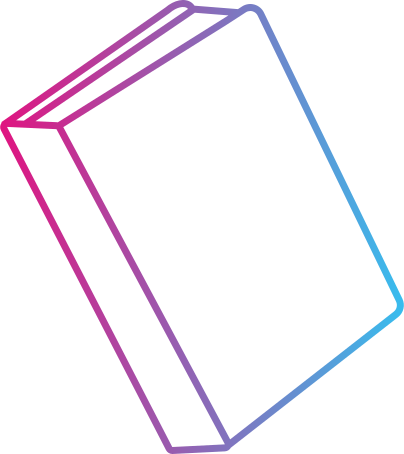

Munkáim
Néhány szó rólam..
Teo vagyok, 29 éves és jelenleg azon dolgozom, hogy megtaláljam azt a munkát, amelyben hosszú távon fejlődhetek és kiteljesedhetek.
Bár évek óta fizikai munkát végzek, idővel egyértelművé vált számomra, hogy a kreatív, technológiai területek állnak igazán közel hozzám. Ezért kezdtem el komolyabban foglalkozni grafikával és frontend fejlesztéssel.
Szabadidőm nagy részét tanulásra és gyakorlásra fordítom – online kurzusokon keresztül és önálló projekteken dolgozva bővítem a tudásom. A maradék időben pedig szívesen olvasok, lehetőleg egy jó kávé mellett.
Tanulmányok

- Szegedi SZC Vasvári Pál Gazdasági és Informatikai
Technikum
szoftverfejlesztő és tesztelő képzés (első év befejezve)
- Webler Oktató Studio
grafikus OKJ tanfolyam
- Best Mixer
barista, mester barista
- Bethlen Gábor Református Gimnázium
érettségi
A fentieken túl, több kisebb-nagyobb tanfolyamot is elvégeztem, hogy növeljem a tudásomat. Ebből néhány:
- - Coursera Google IT Support
- - Coursera Meta Front-End Developer
- - Coursera Google UX design
- - The Bright Academy - Grafikus és Webdesigner tanfolyam
Program és egyéb ismeretek

- - B kategóriás jogosítvány
- - B2 középszintű angol nyelvvizsga
- - UX design alapismeretek
- - adatelemzés alapismeretek
- - grafikai alapismeretek